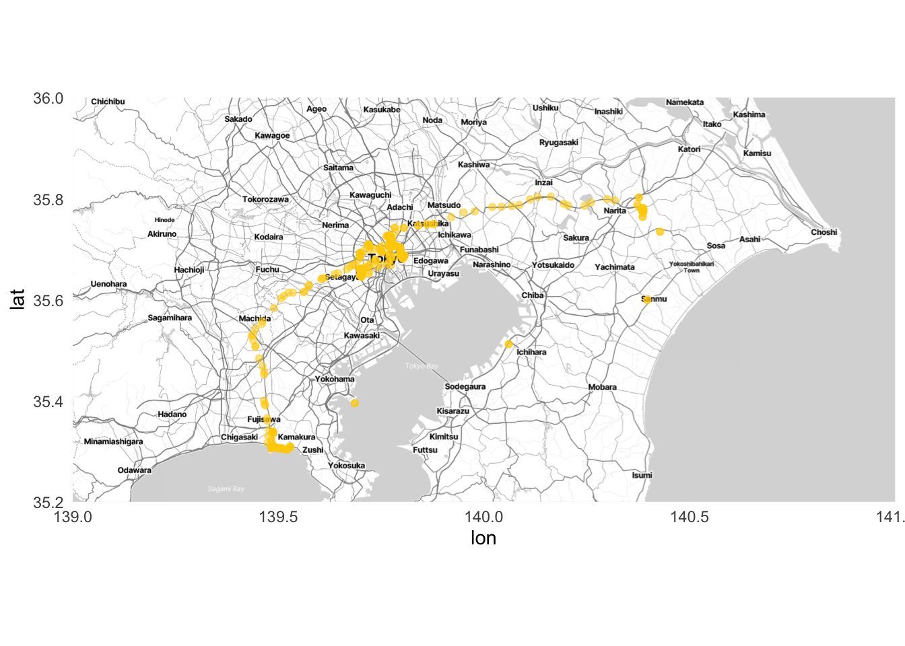
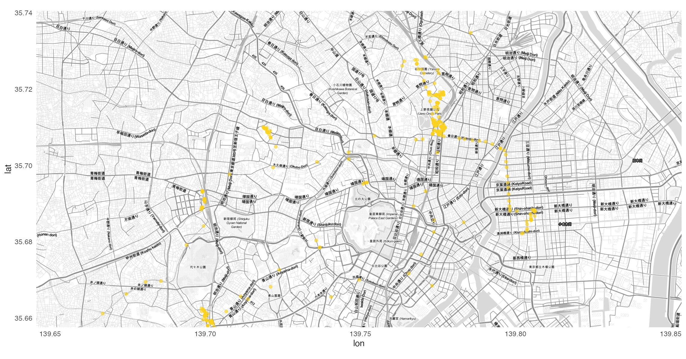
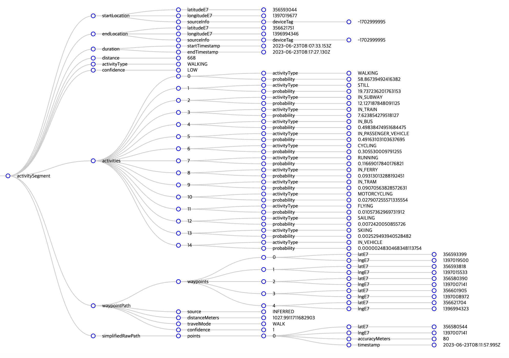
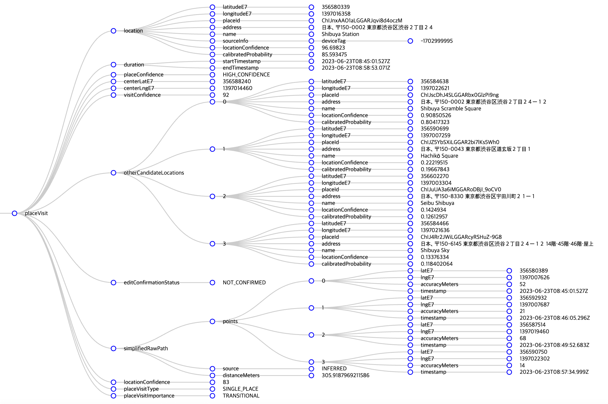

{
"locations": [{
"latitudeE7": 357104584,
"longitudeE7": 1397743146,
"accuracy": 14,
"velocity": 0,
"heading": 95,
"altitude": 10,
"verticalAccuracy": 10,
"deviceTag": XXXXXXXXXX,
"platformType": "IOS",
"serverTimestamp": "2023-06-23T06:01:15.613Z",
"deviceTimestamp": "2023-06-23T06:01:15.205Z",
"batteryCharging": false,
"formFactor": "PHONE",
"timestamp": "2023-06-23T05:51:43Z"
}]
}1.
6월 말에 일본엘 다녀왔다. 벌써 한 달 가까이 지났다. 그 한 달 동안에, 생각보다 많은 일들이 있었다. 뉴스레터 구독자 여러분들과 오프라인 미팅도 했고, 책도 출간됐으니까. 하루하루는 그렇게 무료할 수 없는데, 지나고 나서 되짚어보면 생각보다 알차 보인다. 분명 후자가 착시일 것이다.
일본 여행을 정리해야겠다는 생각이 들었다. 여행을 떠나기 전 목표는 여행을 하면서 기록하는 거였다. 여행의 기억이 휘발되지 않도록 저녁마다 정리를 하려했지만, 그러지 못했다. 숙소에서 에어컨 빵빵하게 틀어놓고 유튜브 보는 게 그렇게 재밌더라. 여행을 마무리하고 집에 도착한 나. 아마 6월 30일 금요일이었을거다. 주말이 있으니까 이 때 정리해봐야지 했다. 하지만 그러지 못했다. 나이를 먹어서 그런지 체력 회복이 필요했다. ‘그래도 복귀 일주일 내에는 해야지…’ 하고 마음 먹었다. 그러지 못했다. 생각보다 내 삶이 참 바쁘더라고. 한 달 내에는 정리를 하자 제발… 이제 기억력이 가물가물해서 한 달 지나면 기억도 못한다니까?
그리고 8월 5일. 그러니까 여행을 다녀온 지 한 달 하고도 1주일이 지난 오늘에서야 첫 발을 뗀다. 시작이 곧 반이라고 했으니까. 이런 마음을 먹으면 스트레스를 받질 않는다. 물론 일본 여행기 정리가 오늘 다 정리되리라는 법은 없다.
서두가 길었다. 절대 분량을 채우려는 속셈은 아니다. 분량, 뭐 길면 좋지만 짧다고 뭐라할 사람 없다. 다만 늦게 정리하는 만큼 가물가물한 내 기억 대신 다른 녀석의 힘을 빌려보려고 한다. 바로 Google. 나는 개인정보를 무척이나 소중하게 여기는 편인데, 그럼에도 불구하고 내 이럴 줄 알고 여행 기간 동안 Google 위치 기록 정보를 켜 두었다. 참 다행이다. 과거의 나에게 따봉 하나 보낸다.
2.
계획적으로 삶을 사는 편이 아니다. 뒤늦게 글 정리 하는 걸 봐라. 데이터도 미리 주욱 뽑아놓고 분석한 게 아니다. 글 쓰다가 데이터 만지고, 또 글 쓰다가 데이터 만지고… 이 글을 쓰면서 Google에 들어가 데이터를 다운받았다. Google 테이크아웃이라는 기능이 있는 줄 처음 알았다. 이 기능을 사용하면 내 Google 계정의 데이터를 테이크아웃 할 수 있다.
내 위치 기록을 다운받았다. 다운로드 폴더에 들어가보니 takeout-20230805T091219Z-001.zip 파일이 있다. 압축을 풀어보면 이러한 디렉토리 구조를 가지고 있다.
.
├── Settings.json
├── Records.json
├── Tombstones.csv
└── Semantic Location History
└── 2023
└── 2023_JUNE.jsonSettings.json 파일을 열어보면 내 Google 계정과 연결되어 있는 기기 정보가 주루룩 뜬다. 지금 사용하고 있는 아이폰 모델이 가장 위에 있다. device 항목에는 아이폰14 Pro의 ID인 “iPhone15,2” 값이 적혀있다. 이 모델만 있는 건 아니다. 이전에 사용한 아이폰12 mini의 흔적도 보인다. 내 개인정보가 이렇게 빠져나간다.
Records.json을 열어본다. 이 파일에는 Google 지도가 기록한 모든 데이터가 들어가 있다.
LatitudeE7, longitudeE7은 이름 그대로, 위도와 경도에 E7을 곱한 값으로 보인다. E7은 10의 7제곱을 의미한다. 천 만이 곱해지면서 위경도의 소숫점이 사라졌다. accurcy는 정확도를 나타낸다. 숫자가 작을수록 정확도가 높다는 의미다. 그 외에도 속도(velocity), 방향(heading, 북쪽을 기준으로 360도) 고도(altitude) 정보도 확인할 수 있다.
일단 Records.json 파일로 확인할 수 있는 기본적인 위치정보를 가지고 시각화해보자. 내가 일본 어디어디를 다녔는지 Google은 알고 있으니까.
데이터 전처리와 시각화는 R을 이용해 진행한다. json 파일을 데이터프레임으로 만들고, 천 만이 곱해져있는 위도와 경도를 원래 모습으로 바꾸어주었다. 거기에 데이터가 기록된 시점(locations.serverTimestamp)이 제대로 인식될 수 있도록 시간 데이터(연월일시분초)로 바꿔줬다.
이제 데이터가 준비되었으니, 이걸 가지고 지도에 뿌리면 될 거다. ggmap 라이브러리를 활용했다.
library(ggplot2)
library(ggmap)
japan <- c(left = 139, right = 141, top = 36, bottom = 35.2)
japan_map <- get_stadiamap(japan, maptype = "stamen_toner_lite")
ggmap(japan_map) +
geom_point(data = records_df,
aes(x = longitude, y = latitude),
color = "#FFCF00",
alpha = 0.5) +
theme_minimal()
우선 내가 다녀온 일본 영역을 담을 수 있는 맵박스를 만들었다. 이름은 japan. 그리고 ggmap 라이브러리에 있는 함수를 이용해 Stamen이 만든 지도를 불러왔다. 그리고 위에서 Record.json에서 정리한 데이터를 불러와 뿌리자.
오른쪽에 나리타 공항도 보이고 잘 그려졌다. 물론 중간 중간 요상한 점들도 보인다. 아마도 비행중에 위치 정보가 잡힌게 아닐까 싶다. 일단은 도쿄에 집중을 해보자. 조금 더 확대해서 그려본다. 맵 박스를 도쿄에 맞게 조정하고 get_stadiamap 함수에서 zoom을 이용해 지도 이미지의 해상도를 조절해보자.
tokyo <- c(left = 139.6455, right = 139.8535, top = 35.7405, bottom = 35.6576)
tokyo_map <- get_stadiamap(tokyo, zoom = 14, maptype = "stamen_toner_lite")
닷새 동안의 도쿄 여행의 숙소는 우에노 근처의 비즈니스 호텔이었다. 그 근처에 노란 점이 가득한 걸 보니 제대로 잘 나온 것 같다. 사실 숙소가지고도 할 이야기가 태산이다. 가격이 문제였는데, 이건 나중에 얘기하겠다.
3.
쓰다 보니 일본을 먼저 정리할 게 아니라는 생각이 들었다. 여행의 시작은 공항 가는 길부터 시작이니까. 집에서 나와 캐리어를 끌고 인천공항까지 가는 길부터 정리해야겠다.
6월 23일 인천에서 도쿄 나리타 공항으로 가는 비행기. 출발 시간은 10시 10분.
비행기를 놓치지 않겠다는 생각을 얼마나 했는지 모른다. 아마 살면서 비행기를 놓쳐본 경험이 있는 사람은 많지 않을 거다. 나는 안타깝게도 비행기를 놓쳐봤다. 언젠지는 정확히 기억이 나질 않는다. 목적지는 기억이 난다. 일본 여행을 가려고 했었다. 저가 항공사인 피치 항공을 예약했고, 인천 공항에 도착했는데 탑승수속이 이미 끝나 있었다.
사실 공항 리무진을 타고 가는 길부터 낌새가 좋지 않았다. “아 시간 애매하겠는걸?”, “왜 기사님은 속도를 내질 않는 거지?”라는 생각을 진짜 거짓말 안 하고 매 분 매 초 했던 것 같다. 물론 다시 항공권을 예약해서 일본을 갈 수도 있었지만 그러지 않았다. 캐리어를 다시 끌고 집으로 오는 기분, 아무도 모르겠지. 분명히 엄마한테 여행 다녀오겠다고 기분 좋게 인사하고 나섰는데, 채 3시간도 되질 않아 캐리어를 끌고 나타나는 자식 놈의 심정. 엄마는 얼마나 웃겼을까.
이렇게 한 번 홀라당 날려버렸으면 정신을 차릴 법도 한데 또 비행기를 놓칠 뻔한 적이 있다.
때는 2019년. 코로나가 터기지 전 마지막 해외여행이었던 아일랜드 여행 때인데, 그때도 공항 리무진을 타고 가면서 매 분 매 초 같은 생각을 했다. “아 시간 애매하겠는걸?”, “왜 기사님은 속도를 내질 않는 거지?” 공항에 도착하니 역시나 탑승수속이 끝나 있었다. 정확히 말하면 끝나는 중이었다. 그때 항공권이 아마 에어프랑스였을 텐데, 에어프랑스 승무원들이 탑승수속을 마무리하고 정리하고 있었다.
아 제발요, 저 놓치면 안 돼요. 어떻게 안 될까요?
여행을 가고 싶다는 마음도 간절했지만, 또다시 비행기를 놓치는 불상사가 생기는 걸 막고 싶은 마음이 간절했다. 승무원들 입장에선 이게 뭔가 싶었을 거다. 지금 돌이켜 생각해 보니 엄청난 민폐였다. 감사하게도 거룩한 마음을 지니신 승무원께서 처리를 해주었다. 다만 추가 수속이니만큼 짐이 제대로 가지 않을 수 있다고 얘기해 주었다. 당시 내 항공권은 인천에서 파리를 거쳐 더블린으로 가는 경로였는데, 파리에서 더블린으로 환승할 때 짐이 제대로 가지 않을 가능성이 있다는 거였다. 그 말은 현실이 되었다. 하지만 지금 정리하는 건 일본 여행기니까 이 얘기도 나중으로 미뤄야겠다.
4.
여하튼 두 번에 가까운 비행기 놓침 사건을 겪었기 때문에 비행기를 놓치지 않겠다는 생각을 무척이나 많이 했다는 거다. 비행기 출발 몇 시간 전에 공항에 도착하면 좋은지를 수십 번 검색할 정도로. 10시에 출발하는 비행기를 타기 위해 나는 아침 5시 반에 일어났다. 합정역에서 공항 리무진을 타기 위해 집 앞에서 택시를 타고 합정역으로 향했다. 아침인데도 사람들이 많았다. 출근하는 사람들이겠지? 나는 여행 가는데 헿. 정류장에 서있는 데 저 앞에 긴 줄이 하나 보였다. 어디를 가는 줄인고 궁금했는데, 곧 버스가 도착했다. 버스에 적혀있는 행선지는 삼성바이오로직스.
공항버스가 왔다. 6002번, 뭔가 낯이 익은 버스다. 알고 보니 본가에서 여행 갈 때 항상 탔던 리무진이다. 6002번 버스의 기점은 청량리역인데, 본가가 그 근처인지라 기점에서 종점까지 주욱 타면 됐었거든. 청량리역에서 공항 리무진을 탔던 때엔, 합정역에 도착하면 본격적으로 여행 분위기가 났다. 왜냐면 합정역이 인천공항으로 가기 전에 탈 수 있는 마지막 버스 정류장이었으니까. 마지막으로 합정역에서 탄 승객들에게 버스 기사님이 ‘이제 안전벨트를 매시라’고 하시면 ’드디어 공항으로 가는구나’ 하는 마음이 들었다.
이렇게 기분이 좋은 날에 좋은 음악이 빠질 수 없지. 마이 앤트 매리의 ’공항 가는 길’을 들었다. 꼬꼬마들은 누군지 모를 수 있지만 마이 앤트 매리는 모던록 1세대 대표 밴드다. 2004년에 발매한 3집 Just Pop은 한국 대중음악 명반 리스트를 뽑으면 항상 들어가는 음반이기도 하고. 이 앨범 첫 곡이 바로 ’공항 가는 길’이다. 어디선가 들었는데 아마 이적이 Just Pop 앨범을 듣고 마이 앤트 매리 멤버들에게 ’너희들 앞으로 이 앨범 넘어서지 못하는 앨범을 만들더라도 실망하지마’라는 얘기를 했다더라.
마이 앤트 매리는 뭐 하나 싶어 나무위키에 검색했다. 오, 2022년에 재결성을 했구만. 오, EP가 발표되었다고? 바로 EP를 검색해 들었다. 앨범을 듣다 보니 어느새 공항에 도착했다. 시간을 보니 7시 23분. 이 정도면 놓치지 않겠지.
5.
이제 기다림의 시간이다. 비행기 탑승 시각은 9시 30분. 2시간이 남았다. 가방을 사려고 상점엘 들어갔다. 괜찮아 보이는 가방이 있어서 가격표를 확인했다. 19만 원. 가방은 일본 가서 사기로 했다. 여분 가방도 없이 캐리어를 일찍 넣은 덕에 양손과 주머니에 짐이 가득이다. 왼쪽 주머니엔 에어팟과 충전기. 오른쪽 주머니엔 여권. 한 손엔 휴대폰과 지갑. 아까 본 그 가방을 다시 볼까 싶었지만 가격이 떠올라서 그만두었다.
공항 사정으로 탑승 시각이 미뤄졌다. 9시 50분부터 탑승.
게이트 앞에 인도인들이 많다. 일본을 가는 것 같진 않고, 아마 다음 비행기가 인도행인데, 미리 기다리시나? 싶었다.
어느새 9시 50분. 들어가기 전 마지막으로 화장실에 들렀다. 턱에 피딱지가 앉아 있다. 도대체 언제부터 붙어있던걸까?
내 예상이 틀렸다. 일본행 비행기 승객 중에 인도 분들이 많은 거였다.
6.
이상하게 비행기 엔진소리만 들으면 잠이 온다. 김승옥이 무진기행에서 바람은 무수히 작은 입자로 되어 있고 그 입자들이 욕심껏 수면제를 품고 있다고 했던가. 그에 못지않은 수면제들이 비행기 엔진소리에도 가득 들어있는 게 분명하다.
혹시나 잠든 사이에 기내식이 지나갈까 싶어 눈에 힘 빡 주고 견뎠다. 하지만 수면제 못 참지. 역시나 잠들었다. 하지만 다행히 앞앞줄이 기내식을 배식받을 때 눈이 떠졌다. 기내식 메뉴는 중식 소고기 누들. 거기에 파인애플과 고구마 샐러드, 모닝빵이 곁들여져 있다. 내 옆에 앉으신 분은 고기를 안 드시는지 채식 메뉴를 요청하였다. 하지만 안타깝게도 기내식은 단일 메뉴라고 한다. 샐러드만 드시더라. 한국인 여성분이었는데 영어를 참으로 유창하게 하셨다. 외국인 일행도 여럿 있었다.
구름을 헤치고 어느새 12시 50분. 드디어 일본 나리타 공항에 도착했다.
입국 수속을 위해 양 손가락과 여권을 스캔해야 했다. 수속 담당관이 나에게 “no case”라고 계속 말을 건넸다. 나는 여권 케이스를 따로 가지고 있지 않아서 “I have no cas”라고 대답했다. 그런데도 담당관은 “no case”를 연거푸 이야기했다. 앞에서 수속하시던 한국인 여성분이 보다 못하셨는지 “여권 투명 케이스를 벗기시면 돼요”라고 조언해주었다.
“아하! (감사합니다)”
멍청하게도 입 밖으로 나온 건 아하 뿐이어서 감사한 마음을 미처 전하지 못했다.
나리타 공항에서 도쿄 우에노까지는 게이세이 스카이라인 열차를 타고 이동했다. 열차의 진동이 참으로 독특했다. 잔잔한 진동이 아니라 미꾸라지나 장어가 꿈틀꿈틀하는 것 마냥 좌우로 요동친다. 내 몸에 무게중심이 부족해서 그런가. 열차 바깥으로 보이는 모습을 보니 진짜 일본에 도착했다는 생각이 들었다. 코시엔 경기가 펼처질 법한 검은 흙의 야구장. 2층 가옥집.
7.
일본 여행의 이야기를 쓰기 앞서 다시 Google 데이터를 살펴볼 필요가 있다. 이번에 살펴볼 파일은 Semantic Location History가 담겨있는 JSON 파일이다. 이름은 2023_JUNE.JSON이다. 이 JSON 파일에는 일본에서 내가 어디를 갔는지, 어떻게 움직였는지가 다 나와있다. 크게 두 가지 이벤트를 통해 알 수 있는데, 하나는 activitySegment이고 또 하나는 placeVisit이다. 우선 activitySegment가 어떤 녀석인지 좀 살펴보도록 하자.

이 activitySegment 이벤트에는 내가 어떤 활동을 했는지가 들어 있다. 특정 행동이 시작된 시점과 끝난 시점, 이동거리, 걸린 시간 등을 알 수 있다. 이 데이터를 바탕으로 Google은 내 활동이 어떤 타입인지 예측한다. Google이 생각한 나의 행동은 WALKING. 다만 그 분류의 신뢰도는 그리 높지 않은 모양이다. Confidence가 LOW로 나와있다. Google은 총 38가지의 활동 타입 중에 가장 확률이 높은 녀석을 골라 보여준다. WALKING의 확률은 58.9%. STILL(가만히 서 있음)의 확률은 19.7% 정도다.
이번엔 placeVisit 이벤트를 살펴보자. 이름에서 알 수 있듯, 이 이벤트를 보면 어느 장소에 방문했는지를 알 수 있다.

Google은 내가 2023년 6월 23일 아침 8시 45분에 시부야 역에 있다고 파악하고 있다. 시간이 맞지 않는다. 왜냐하면 23일 이 시간에 나는 인천공항에서 가방을 보고 있었으니까. 19만 원짜리 그 가방말이다. 데이터를 정리할 때 Timestamp 항목을 조정할 필요가 있겠다. 처음에 살펴본 activitySegement 이벤트와 마찬가지로 placeVisit에도 다른 장소 후보군을 함께 볼 수 있다. 우선 시부야 역의 신뢰도는 꽤 높다. 96.7%. 다른 후보군을 보면 시부야 스크램블 스퀘어(90.9%), 하치코 동상이 있는 광장(22.2%)도 보인다.
8.
일단 시간 데이터를 조정하고 들어가야겠다. 우선 맨 처음 만들어놨던 records_df 파일을 다시 좀 바꿔보자. 처음에는 그냥 바로 json 파일을 데이터프레임으로 만들었다. locations 안에 latitudeE7, longitudeE7 등의 다양한 요소가 들어있는 구조였기에 만들어진 데이터프레임의 칼럼명은 location.latitudeE7, location.longitudeE7 이런 식이었다.
purrr 패키지에 있는 pluck 함수를 사용하면 중첩된 데이터 구조 내에 들어있는 녀석들을 깔끔하게 가져올 수 있다. JSON 파일을 읽어올 때 simplyfyVector를 TRUE로 지정하면 중첩된 리스트를 벡터나 데이터프레임으로 단순화할 수 있다. 거기에다가 pluck 함수를 이용해서 locations에 들어있는 녀석들을 가져오자.
천 만이 곱해져있는 위도 경도를 원래대로 바꾸고 시간을 현지 시간으로 조정해야 한다. 데이터에 들어가 있는 시간은 협정세계시(UTC, Coordinated Universal Time) 기준이다. 우리나라와 일본은 UTC+9, 그러니까 협정세계시를 기준으로 9시간이 빠른 시간대에 속해있다. 이 시간대로 변경해주면 시부야 역에 내가 있었던 시간은 오후 5시 45분. Google이 기록한 시간에 9시간을 더해 일본 현지 시간으로 변경해주자.
Google이 기록한 UTC+0 시간이 들어있는 timestamp 변수에다가 일본 time zone(Asia/Tokyo)을 넣어준다. 그리고 force_tz 함수를 이용해서 시간대를 변경한다.
records_df <- records_df |>
mutate(latitude = latitudeE7/10000000,
longitude = longitudeE7/10000000,
timestamp = lubridate::ymd_hms(timestamp, tz = "UTC"),
timestamp_local = lubridate::force_tz(with_tz(timestamp, "Asia/Tokyo"), "UTC"))
records_df |>
select(latitude, longitude, timestamp, timestamp_local) |>
head()# A tibble: 6 × 4
latitude longitude timestamp timestamp_local
<dbl> <dbl> <dttm> <dttm>
1 35.8 140. 2023-06-23 04:59:02 2023-06-23 13:59:02
2 35.8 140. 2023-06-23 04:59:20 2023-06-23 13:59:20
3 35.8 140. 2023-06-23 05:05:50 2023-06-23 14:05:50
4 35.8 140. 2023-06-23 05:07:50 2023-06-23 14:07:50
5 35.8 140. 2023-06-23 05:09:54 2023-06-23 14:09:54
6 35.8 140. 2023-06-23 05:12:00 2023-06-23 14:12:00위도와 경도도 우리가 아는 형태로 나왔고, timestamp_local 열에도 현지 시간이 잘 변경되었다.
9.
동일한 과정을 이제 2023_JUNE.JSON 파일에도 적용해주자. 다만 2023_JUNE.JSON 파일은 단계가 조금 더 들어간다. 위에서 살펴봤듯 요 JSON 파일에는 서로 다른 두 가지 이벤트가 들어있다. 하나의 틀로 데이터프레임을 만들면 오류가 날게 뻔하다. 그래서 두 이벤트를 따로 분리해서 데이터프레임을 만들어야 한다. 우선 activitySegment 이벤트를 정리해보자.
크게 5단계로 설명할 수 있다.
- JSON 파일 불러오기. 하지만 이번엔 simplifyVector 값을 FALSE로
- 불러온 JSON 파일에서 timelineObjects만 골라낸다. 요 timelineObjects 안에 우리가 정리할 activitySegement와 placeVisit 이벤트가 들어있다.
- timelineObjects에서 activitySegement만 필터링한다.
- activitySegment 이벤트를 데이터프레임으로 만든다.
- local time을 만들어준다.
이 과정을 코드로 나타내면 이렇게 쓸 수 있다.
activitySegment_list <- read_json("2023_JUNE.json", simplifyVector = FALSE) |>
pluck("timelineObjects") |>
purrr::map("activitySegment") |>
purrr::map_dfr(\(x) data.frame(
distance_m = x$distance,
activity_type = x$activityType,
confidence = x$confidence,
start_latitudeE7 = x$startLocation$latitudeE7 / 1e7,
start_longitudeE7 = x$startLocation$longitudeE7 / 1e7,
end_latitudeE7 = x$endLocation$latitudeE7 / 1e7,
end_longitudeE7 = x$endLocation$longitudeE7 / 1e7,
startTimestamp = ymd_hms(x$duration$startTimestamp, tz = "UTC"),
endTimestamp = ymd_hms(x$duration$endTimestamp, tz = "UTC")
)) |>
mutate(startTimestamp_local = lubridate::force_tz(with_tz(startTimestamp, "Asia/Tokyo"), "UTC"),
endTimestamp_local = lubridate::force_tz(with_tz(endTimestamp, "Asia/Tokyo"), "UTC")) |>
as_tibble()만들어진 데이터는 요런 모양이다. 이동거리와 Google이 판단한 내 활동의 종류, 그 판단의 신뢰도, 시작 시점, 끝나는 시점, 시작 위치, 끝나는 위치를 확인할 수 있다.
activitySegment_list |>
select(distance_m, activity_type, confidence, startTimestamp_local, endTimestamp_local) |>
head()# A tibble: 6 × 5
distance_m activity_type confidence startTimestamp_local endTimestamp_local
<int> <chr> <chr> <dttm> <dttm>
1 53314 IN_PASSENGER_V… LOW 2023-06-23 13:59:02 2023-06-23 14:34:30
2 57961 IN_TRAIN MEDIUM 2023-06-23 14:34:30 2023-06-23 14:43:36
3 8427 IN_SUBWAY MEDIUM 2023-06-23 16:36:10 2023-06-23 17:07:33
4 668 WALKING LOW 2023-06-23 17:07:33 2023-06-23 17:17:27
5 469 WALKING LOW 2023-06-23 17:39:59 2023-06-23 17:45:01
6 8840 IN_SUBWAY MEDIUM 2023-06-23 17:58:53 2023-06-23 18:29:42같은 방식으로 placeVisit도 동일한 리스트를 만들어준다.
placeVisit_list <- read_json("2023_JUNE.json", simplifyVector = FALSE) |>
pluck("timelineObjects") |>
purrr::map("placeVisit") |>
map_dfr(\(x) data.frame(
id = x$location$placeId,
latitudeE7 = x$location$latitudeE7 / 1e7,
longitudeE7 = x$location$longitudeE7 / 1e7,
name = x$location$name,
address = x$location$address,
startTimestamp = ymd_hms(x$duration$startTimestamp, tz = "UTC"),
endTimestamp = ymd_hms(x$duration$endTimestamp, tz = "UTC")
)) |>
mutate(startTimestamp_local = lubridate::force_tz(with_tz(startTimestamp, "Asia/Tokyo"), "UTC"),
endTimestamp_local = lubridate::force_tz(with_tz(endTimestamp, "Asia/Tokyo"), "UTC")) |>
as_tibble()
placeVisit_list |>
select(name, address) |>
head()# A tibble: 6 × 2
name address
<chr> <chr>
1 Keisei Ueno Station 日本、〒110-0007 東京都台東区上野公園１
2 Tosei Hotel Cocone Ueno 日本、〒110-0015 東京都台東区東上野２丁目１８−５
3 Ramen Kamo to Negi 日本、〒110-0005 東京都台東区上野６丁目４−１５
4 Shibuya Parco 日本、〒150-0042 東京都渋谷区宇田川町１５−１
5 Shibuya Station 日本、〒150-0002 東京都渋谷区渋谷２丁目２４
6 Tosei Hotel Cocone Ueno 日本、〒110-0015 東京都台東区東上野２丁目１８−５방문한 장소의 위치와 시간, 자세한 주소까지도 확인할 수 있다.
이제 데이터도 제대로 정리가 되었겠다, 이제 본격적으로 일본에서의 여행 이야기를 시작할 수 있겠다.
(다음 편에 계속)